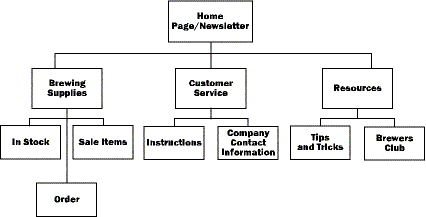

|
| ||
|
| ||
Mary Haggard
Program Manager
Microsoft Corporation
April 25, 1997
The following article was originally published in Site Builder Magazine (now known as MSDN Online Voices).
You have designed, built, and supported great systems and software. You know the ins and outs of Visual Basic®. You can solve 101 problems involving Windows NT® in a heartbeat, and unravel even the trickiest network issue. Now you've been told to conquer the World Wide Web—and you have a new conundrum: graphic design.
For computer professionals, working for the first time with professionals from the creative sector, such as graphic designers, can be the most challenging, yet truly the most rewarding part of your Web-learning process. There are few feelings as rewarding as the the first time you see your ideas and hard work brought to life through great graphic design.
In this installment of For Starters, we'll talk about how best to work with these magicians called Web designers—how to diagram and organize information to help them do their job, how to define your audience, and how to build a great design process into your Web project.
Content forms the foundation of your Web site. In the same way that an architect can't design a building without knowing what purpose the building will serve, your designer can't build graphics for your site until you know what you want to say. First, organize your content into a site map. Build hierarchical flow charts that organize the content into distinct groups. For more complicated projects, walk through several likely user scenarios and mark those paths on the same chart.
Let's say you own a business that sells beer-making supplies to home brewers. Your set of information might contain the following:
From the above list, what information do you want your site visitors find most easily?
Since you're in business to make money, you want to be sure the information about the products you are sell is easy to find. You also want people to visit the site regularly, so a brewing newsletter with lots of helpful information that changes monthly will get you repeat visitors—and repeat business. You also want to cut down on the number of phone calls you get from customers who need to understand how to use your products, so the online instructions for your products should be readily available. These four areas can all be made very prominent on your Web site through the use of graphics. Also use graphics to help users navigate from within one area of the site to another.
Here's how you might diagram a user scenario for your home-brewing business:

Who are your users? Simply identifying your intended audience is critical to information design. Are your customers 14-year-old computer gamers from the United States? Are they 30-40-year-old computer professionals from throughout the world?
Ask your marketing organization what demographic information they can provide. Go out onto the World Wide Web and look through sites that are targeted toward the same audience you are trying to reach, or go to your local library and look through magazines targeted at your audience. What visual cues do they use the most? Which seem most successful?
Be sure you have complete information on your corporate logos and other collateral information. Try to have good samples of these ready in electronic format for your site designer. (Checking to be sure all of your copyrights and trademarks are in order is a good idea here too.)
Here is a quick checklist of information to provide your site designer.
"Information design isn't necessarily about databases, spreadsheets, or even infographics. It's about process—designers and clients working together to solve problems and convey complex information through design systems that are functional and beautiful."–Ann Senechal, Adobe Magazine, Spring 97
Most technical professionals (myself included) have a background in systems design, support, or in software development. Few of us have worked with creative professionals to design and build a system. Therefore, we have little understanding of their needs in this process. Here are a few things to keep in mind during your Web cycle process.
One of the biggest mistakes made in Web development cycles is not giving the creative process enough time. After you deliver the information listed above to your designers, build time into your schedule to go through the process your designer lays out. Consider adding the following milestones to your schedule.
Design comp review. During the first part of the process, look at several potential design treatments for your site. Ask your designer to build two or three pages of your site, using two or three different graphical treatments. Have a design committee review the designs and decide which to pursue.
Design of graphics. Allow plenty of time—how much depends on the size of your site—for the development of quality images. Your designer can give you an estimate of the time this will take.
Graphic design review. At several points during the process, review the work in progress with the design committee. Be sure that the graphics are communicating your most important issues. Try to be objective during this process. It is more important that the project the message you want, rather than whether anyone happens to like a certain shade of blue. Try to have at least two meetings during the process to go over the work in progress.
HTML layout of graphics. After the graphics are designed, HTML code needs to be written to lay out these graphics correctly. With your designer, decide who will be responsible for this task and be sure to allow about a week in your schedule for this work.
Keep graphic designers involved in all phases of the development process. They need to participate in any decisions that affect the Web site's UI or content organization. As the champions of the customer experience on your site, Web designers provide invaluable experience and judgment to help you organize ideas—which will assist users in quickly and successfully finding the information they need on your site. They also need to understand the structure of any database application used in conjunction with the Web site so that they can design a well thought-out structure for corresponding HTML pages or forms.
Technical considerations for Web design include size of graphics, color management, and some cross-browser concerns. The following articles can help you learn more about these issues.
Decreasing Download Time Through Effective Color Management
Authoring for Multiple Platforms
The Web Gallery is full of the highest quality images, ActiveX controls, and style sheet templates, free for your use.
Also, the Web Page Design for Designers  Web site is a great resource—as well as Web Pages That Suck
Web site is a great resource—as well as Web Pages That Suck  .
.
Since taking early retirement as commander of the Starship Enterprise and joining Microsoft, Mary Haggard has worked her way through the ranks to her lifelong goal, being Program Manager for the MSDN Online Web publishing team. Mary once worked in a paper mill, so she knows pulp when she sees it.
I asked MSDN Online Network's art director, Craig Kosak (they don't make them any better), for a quick list of must-know Web design terms. These concepts are only the tip of the design iceberg, but knowing them will speed your collaboration—and spare you those glazed, dazed looks.
Here's Craig's list:
Graphics File Formats:
GIF files (Graphics Interchange Format) display a maximum of 256 colors and provide for substantial file-size compression. Best used for graphics with crisp, hard edges and areas of flat color.
JPEG files (Joint Photographic Experts Group) display up to 16.7 million colors (dependent on the capabilities of the user's computer) and offer a variety of compression levels. Best used for display of high-quality photographic images. Highly compressed JPEGs (low-quality settings) can appear muddy and are usually of lower quality than GIFs of a similar file size.
Basic HTML is easy to code and maintain but provides little control over the layout appearance. Exact control over vertical and horizontal spacing is rarely possible.
Tables can be used to divide a page into either fixed or resizable areas containing either text or graphics. A highly flexible approach that allows designers to achieve virtually any page layout.
Frames divide a page into areas that contain individual HTML documents (either basic HTML or tables). Allows definition of scrolling and non-scrolling areas and the ability to update just a portion of a page, which can reduce download time. Can present problems when linking to anchors, and for users who navigate with the Back button or who print documents.
Did you find this material useful? Gripes? Compliments? Suggestions for other articles? Write us!
© 1999 Microsoft Corporation. All rights reserved. Terms of use.